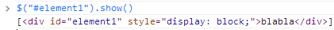
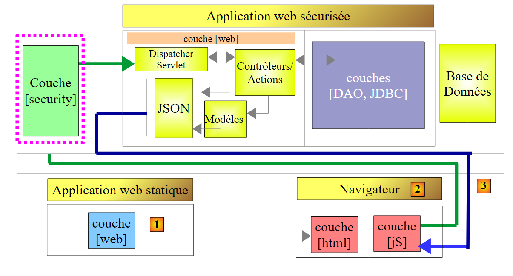
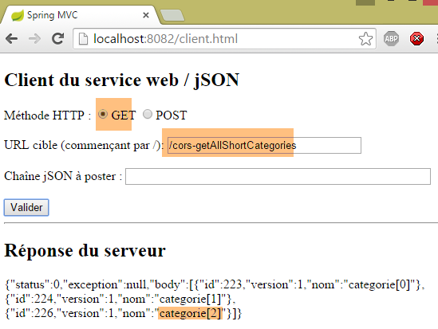
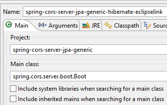
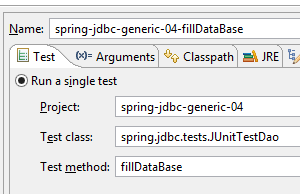
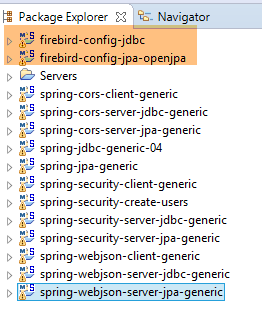
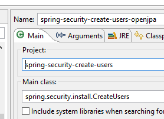

21. Gestão de acessos entre domínios
21.1. Architecture
Vamos agora analisar o problema das solicitações entre domínios. No documento [Tutoriel AngularJS / Spring 4], desenvolve-se uma aplicação cliente/servidor em que o cliente é uma aplicação AngularJS:
 |
- as páginas HTML / CSS / JS da aplicação Angular provêm do servidor [1];
- em [2], o serviço [dao] faz uma solicitação a outro servidor, o servidor [2]. Ora, isso é proibido pelo navegador que executa a aplicação Angular, porque constitui uma falha de segurança. A aplicação só pode consultar o servidor de onde provém, ou seja, o servidor [1];
Na verdade, não é correto dizer que o navegador proíbe a aplicação Angular de consultar o servidor [2]. O navegador consulta, na realidade, o servidor [2] para saber se este autoriza um cliente que não provém do seu próprio domínio a consultá-lo. Esta técnica de partilha é designada por CORS (Cross-Origin Resource Sharing). O servidor [2] dá o seu consentimento enviando cabeçalhos HTTP específicos.
Para ilustrar os problemas que podem surgir, vamos criar uma aplicação cliente/servidor em que:
- o servidor será o nosso servidor web / jSON seguro;
- o cliente será uma página simples HTML equipada com código JavaScript que enviará pedidos ao servidor web / jSON;
Vamos implementar a seguinte arquitetura:
 |
- em [1], uma aplicação web fornece as páginas HTML / jS;
- em [2], o navegador executa o JavaScript incorporado nas páginas HTML para consultar o serviço web seguro [3];
21.2. O projeto [spring-cors-server-jdbc-generic]
21.2.1. Configuração do ambiente de trabalho
 |
- carregue os projetos acima referidos. Os projetos [spring-cors-*] encontram-se na pasta [<exemples>\spring-database-generic\spring-cors];
- prima Alt-F5 e regenera todos os projetos Maven;
Em seguida, execute a configuração de execução denominada [spring-cors-server-jdbc-generic] (os projetos SGBD e MySQL devem ser iniciados), que inicia um serviço web na porta 8081:
 |
Preencha a base [dbproduitscategories] com a configuração de execução denominada [spring-jdbc-generic-04-fillDataBase]:
 |
Execute a configuração de execução denominada [spring-cors-client-generic], que inicia uma segunda aplicação web (num outro Tomcat) na porta 8082:
 |
Num navegador, aceda a URL [http://localhost:8082/client.html]:
 |
- em [1], solicita-se a versão resumida de todas as categorias;
- em [2], a resposta jSON do servidor;
21.2.2. O projeto do cliente [spring-cors-client-generic]
 |
 |
O ficheiro [application.properties] permite-nos definir a porta da aplicação web do cliente. O seu conteúdo é o seguinte:
server.port=8082
Assim:
- O cliente é uma aplicação web disponível em URL [http://localhost:8082];
- o servidor é uma aplicação web disponível em URL [http://localhost:8081];
Como o cliente não é acedido a partir da mesma porta que o servidor, surge o problema das solicitações entre domínios. Com efeito, [http://localhost:8081] e [http://localhost:8082] são dois domínios diferentes.
21.2.3. Configuração do Maven
O projeto é um projeto Maven com o seguinte ficheiro [pom.xml]:
<?xml version="1.0" encoding="UTF-8"?>
<project xmlns="http://maven.apache.org/POM/4.0.0" xmlns:xsi="http://www.w3.org/2001/XMLSchema-instance"
xsi:schemaLocation="http://maven.apache.org/POM/4.0.0 http://maven.apache.org/xsd/maven-4.0.0.xsd">
<modelVersion>4.0.0</modelVersion>
<groupId>dvp.spring.database</groupId>
<artifactId>spring-cors-client-generic</artifactId>
<version>0.0.1-SNAPSHOT</version>
<packaging>jar</packaging>
<name>spring-cors-client-generic</name>
<description>Client cors for webjson server</description>
<parent>
<groupId>org.springframework.boot</groupId>
<artifactId>spring-boot-starter-parent</artifactId>
<version>1.2.3.RELEASE</version>
<relativePath /> <!-- pesquisar pai no repositório -->
</parent>
<properties>
<project.build.sourceEncoding>UTF-8</project.build.sourceEncoding>
<java.version>1.7</java.version>
</properties>
<dependencies>
<dependency>
<groupId>org.springframework.boot</groupId>
<artifactId>spring-boot-starter-web</artifactId>
</dependency>
</dependencies>
<!-- plugins -->
<build>
<plugins>
<plugin>
<groupId>org.springframework.boot</groupId>
<artifactId>spring-boot-maven-plugin</artifactId>
</plugin>
<plugin>
<artifactId>maven-assembly-plugin</artifactId>
<configuration>
<descriptorRefs>
<descriptorRef>jar-with-dependencies</descriptorRef>
</descriptorRefs>
</configuration>
</plugin>
<plugin>
<groupId>org.apache.maven.plugins</groupId>
<artifactId>maven-surefire-plugin</artifactId>
<version>2.18.1</version>
</plugin>
</plugins>
</build>
</project>
- linhas 14-19: trata-se de um projeto Spring Boot;
- linhas 27-30: utiliza-se a dependência [spring-boot-starter-web], que inclui um servidor Tomcat e o Spring MVC;
21.2.4. Noções básicas sobre o jQuery e o JavaScript
 |
A aplicação web apresenta a seguinte página única:
 |
Inclui código JavaScript (jS) executado no navegador. Vamos apresentar alguns conceitos básicos de JavaScript que nos permitirão compreender o código. O cliente irá efetuar chamadas HTTP utilizando a biblioteca jQuery [https://jquery.com/], que disponibiliza inúmeras funções que facilitam o desenvolvimento em JavaScript. Criamos um ficheiro estático HTML [jQuery.html] que colocamos na pasta [static]:
 |
Este ficheiro terá o seguinte conteúdo:
<!DOCTYPE html>
<html xmlns="http://www.w3.org/1999/xhtml">
<head>
<meta http-equiv="Content-Type" content="text/html; charset=utf-8" />
<title>JQuery-01</title>
<script type="text/javascript" src="/js/jquery-2.1.3.min.js"></script>
</head>
<body>
<h3>Rudiments de JQuery</h3>
<div id="element1">
Elément 1
</div>
</body>
</html>
- linha 6: importação de jQuery;
- linhas 10-12: um elemento da página com o ID [element1]. Vamos experimentar com este elemento.
Temos de descarregar o ficheiro [jquery-2.1.3.min.js]. Encontramos a versão mais recente do jQuery no URL [http://jquery.com/download/]:

Colocaremos o ficheiro descarregado na pasta [static / js]:
|
Feito isto, acedemos à visualização estática [jQuery.html] com o Chrome [1-2]:
 |
No Google Chrome, execute [Ctrl-Maj-I] para aceder às ferramentas de desenvolvimento [3]. O separador [Console] [4] permite executar código JavaScript. Apresentamos a seguir alguns comandos JavaScript a introduzir, acompanhados de uma explicação.
|
: devolve a coleção de todos os elementos com o id [element1], ou seja, normalmente uma coleção de 0 ou 1 elemento, uma vez que não é possível ter dois IDs idênticos numa página HTML. |  |
|
: atribui o texto [blabla] a todos os elementos da coleção. Isto tem como efeito alterar o conteúdo exibido pela página |  |
|
oculta os elementos da coleção. O texto [blabla] já não é apresentado. |  |
|
: volta a exibir a coleção. Isto permite-nos permitir ver que o elemento com o ID [element1] tem o atributo CSS style='display: none;', o que faz com que o elemento fique oculto. | |
|
: apresenta os elementos da coleção. O texto [blabla] volta a aparecer. É o atributo CSS style='display: block;' que garante esta exibição. |   |
|
: define um atributo para todos os elementos da coleção. O atributo é, neste caso, [style] e o seu valor [color: red]. O texto [blabla] fica a vermelho. |  |
 | |
 |
É de salientar que o código URL do navegador não se alterou durante todas estas operações. Não houve qualquer comunicação com o servidor web. Tudo decorre no interior do navegador. Agora, vamos visualizar o código-fonte da página:
<!DOCTYPE html>
<html xmlns="http://www.w3.org/1999/xhtml">
<head>
<meta http-equiv="Content-Type" content="text/html; charset=utf-8" />
<title>JQuery-01</title>
<script type="text/javascript" src="/js/jquery-1.11.1.min.js"></script>
</head>
<body>
<h3>Rudiments de JQuery</h3>
<div id="element1">
Elément 1
</div>
</body>
</html>
Este é o texto inicial. Não reflete de forma alguma as alterações que fizemos no elemento nas linhas 10 a 12. É importante ter isto em conta ao depurar JavaScript. Por isso, muitas vezes é inútil visualizar o código-fonte da página apresentada.
21.2.5. O código jS da aplicação
Voltemos ao código HTML da página da aplicação cliente que irá consultar o serviço web / jSON:
|
<!DOCTYPE html>
<html>
<head>
<meta charset="UTF-8">
<title>Spring MVC</title>
<script type="text/javascript" src="/js/jquery-2.1.1.min.js"></script>
<script type="text/javascript" src="/js/client.js"></script>
</head>
<body>
<h2>Client du service web / jSON</h2>
<form id="formulaire">
<!-- método HTTP -->
Méthode HTTP :
<!-- -->
<input type="radio" id="get" name="method" value="get" checked="checked" />GET
<!-- -->
<input type="radio" id="post" name="method" value="post" />POST
<!-- URL -->
<br /> <br />URL cible : <input type="text" id="url" size="30"><br />
<!-- valor lançado -->
<br /> Chaîne jSON à poster : <input type="text" id="posted" size="50" />
<!-- botão de validação -->
<br /> <br /> <input type="submit" value="Valider" onclick="javascript:requestServer(); return false;"></input>
</form>
<hr />
<h2>Réponse du serveur</h2>
<div id="response"></div>
</body>
</html>
- linha 6: importamos a biblioteca jQuery;
- linha 7: importa-se um código que iremos escrever;
- linhas 11, 15, 17, 21: anotamos os identificadores [id] dos componentes da página. O JavaScript faz referência a estes componentes através destes identificadores;
O código [client.js] é o seguinte:
// dados globais
var url;
var posted;
var response;
var method;
function requestServer() {
// recuperam-se as informações do formulário
var urlValue = url.val();
var postedValue = posted.val();
method = document.forms[0].elements['method'].value;
// efetua-se manualmente uma chamada Ajax
if (method === "get") {
doGet(urlValue);
} else {
doPost(urlValue, postedValue);
}
}
function doGet(url) {
// efetua-se uma chamada Ajax manualmente
$.ajax({
headers : {
'«Authorization»: «Basic YWRtaW46YWRtaW4=»
},
url : 'http://localhost:8081' + url,
type : 'GET',
dataType : 'tex/plain',
beforeSend : function() {
},
success : function(data) {
// resultado em texto
response.text(data);
},
complete : function() {
},
error : function(jqXHR) {
// erro de sistema
response.text(jqXHR.responseText);
}
})
}
function doPost(url, posted) {
// é feita uma chamada Ajax manualmente
$.ajax({
headers : {
'Autorização: 'Basic YWRtaW46YWRtaW4='
},
url : 'http://localhost:8081 ' + url,
type : 'POST',
contentType : 'application/json',
data : posted,
dataType : 'tex/plain',
beforeSend : function() {
},
success : function(data) {
// resultado em texto
response.text(data);
},
complete : function() {
},
error : function(jqXHR) {
// erro de sistema
response.text(jqXHR.responseText);
}
})
}
// ao carregar o documento
$(document).ready(function() {
// a recuperar as referências dos componentes da página
url = $("#url");
posted = $("#posted");
response = $("#response");
});
- linhas 71-75: do código jS executado no final do carregamento do documento no navegador;
- linhas 73-75: recuperam-se as referências de três das áreas do documento HTML;
- linhas 2-5: variáveis globais conhecidas em todas as funções definidas no ficheiro jS;
- linha 9: recupera-se o valor URL introduzido pelo utilizador;
- linha 10: recupera-se o valor que o utilizador pretende enviar;
- linha 11: recupera-se o método [get] ou [post] a utilizar para solicitar o URL da linha 9:
- «document» designa o documento carregado pelo navegador, o que se denomina DOM (Document Object Model),
- document.forms[0] refere-se ao primeiro formulário do documento, podendo um documento conter vários. Neste caso, existe apenas um,
- document.forms[0].elements['method'] refere-se ao elemento do formulário que possui o atributo [name='method']. Existem dois:
<input type="radio" id="get" name="method" value="get" checked="checked" />GET
<input type="radio" id="post" name="method" value="post" />POST
- (continuação)
- document.forms[0].elements['method'].value é o valor que será enviado para o componente que possui o atributo [name='method']. Sabe-se que o valor lançado é o valor do atributo [value] do botão de opção selecionado. Neste caso, será, portanto, uma das cadeias ['get', 'post'];
- linhas 13-18: dependendo do método HTTP a utilizar, executa-se o método [doGet] ou [doPost];
- o método jQuery [$.ajax] efetua uma chamada HTTP;
- linhas 23-25: contacta-se um servidor que exige um cabeçalho HTTP [Authorization: Basic code]. Criamos este cabeçalho para o utilizador [admin / admin], que é o único a poder consultar o servidor;
- linha 26: o utilizador irá introduzir URL do tipo [/getAllLongCategories, /saveCategories, ...]. Por isso, é necessário preencher estes URL;
- linha 27: método HTTP a utilizar;
- linha 28: o servidor devolve jSON. Indica-se o tipo [text/plain] como tipo de resultado, para que seja apresentado tal como foi recebido;
- linha 33: exibição da resposta de texto do servidor;
- linha 39: exibição de uma eventual mensagem de erro em formato de texto;
- linha 44: o método [doPost] recebe um segundo parâmetro, que é o valor a enviar;
- linha 52: para indicar que o valor a enviar será na forma de uma cadeia jSON;
21.2.6. Execução do cliente
A aplicação cliente é uma aplicação de consola lançada pela seguinte classe executável [Client]:
 |
package spring.cors.client;
import org.springframework.boot.SpringApplication;
import org.springframework.boot.autoconfigure.EnableAutoConfiguration;
@EnableAutoConfiguration
public class Client {
public static void main(String[] args) {
SpringApplication.run(Client.class, args);
}
}
- linha 6: a anotação [@EnableAutoConfiguration] é uma anotação do projeto [Spring Boot] (linha 4). O Spring Boot irá inspecionar os ficheiros presentes no Classpath do projeto. Neste caso, serão todas as dependências Maven fornecidas pela dependência única do ficheiro [pom.xml]:
<dependencies>
<dependency>
<groupId>org.springframework.boot</groupId>
<artifactId>spring-boot-starter-web</artifactId>
</dependency>
</dependencies>
Esta dependência traz um grande número de arquivos, nomeadamente o Spring MVC e um servidor Tomcat. Devido à presença destas dependências, o Spring Boot irá configurar, com valores por predefinição, um projeto Spring MVC a ser executado no Tomcat. O servidor Tomcat fica, assim, configurado para funcionar na porta 8080. Se quisermos afastar-nos dos valores predefinidos escolhidos pelo Spring Boot, podemos utilizar o ficheiro [application.properties] na raiz do Classpath (tudo o que está em [src / main / resources] encontra-se na raiz do Classpath):
 |
Indicamos que o servidor Tomcat deve funcionar na porta 8082 da seguinte forma:
server.port=8082
A lista de parâmetros utilizáveis pode ser consultada em [application.properties], em URL (junho de 2015) e em [http://docs.spring.io/spring-boot/docs/current/reference/html/common-application-properties.html];
Voltando ao código de [Client.java]:
- linha 10: o método [SpringApplication.run] irá implementar a página [client.html] no servidor Tomcat presente no Classpath do projeto;
21.2.7. O URL [/getAllShortCategories]
 |
Lançamos:
- o servidor web/json seguro na porta 8081 (configuração [spring-security-server-jdbc-generic]);
- o cliente deste servidor na porta 8082 (configuração [spring-cors-client-generic]);
depois solicitamos o URL [http://localhost:8082/client.html] [1]:
 |
- no [2], executamos um GET sobre o URL e o [http://localhost:8081/getAllShortCategories];
Não obtemos resposta do servidor. Ao consultar a consola de desenvolvimento do Chrome (Ctrl+Shift+I), descobrimos um erro:
 |
- em [1], estamos no separador [Network];
- em [2], verifica-se que a solicitação HTTP que foi efetuada não é [GET], mas sim [OPTIONS]. No caso de um pedido entre domínios, o navegador verifica junto do servidor se um determinado número de condições está preenchido, enviando-lhe um pedido HTTP [OPTIONS]. Neste caso, as solicitações são as indicadas pelos marcadores [5-6];
- Em [5], o navegador pergunta se o destino URL pode ser alcançado com um GET. A solicitação [Access-Control-Request-Method] requer uma resposta com um cabeçalho HTTP [Access-Control-Allow-Methods] indicando que o método solicitado é aceite;
- em [6], o navegador envia o cabeçalho HTTP [Origin: http://localhost:8081]. Este cabeçalho solicita uma resposta num cabeçalho HTTP [Access-Control-Allow-Origin] indicando que a origem indicada é aceite;
- em [7], o navegador pergunta se os cabeçalhos HTTP, [accept] e [authorization] são aceites. A solicitação [Access-Control-Request-Headers] aguarda uma resposta com um cabeçalho HTTP [Access-Control-Allow-Headers] indicando que os cabeçalhos solicitados são aceites;
- ocorre um erro em [3]. Ao clicar no ícone, surge o erro [4];
- em [4], a mensagem indica que o servidor não enviou o cabeçalho HTTP [Access-Control-Allow-Origin], que indica se a origem do pedido é aceite;
- em [8], verifica-se que o servidor efetivamente não enviou esse cabeçalho. Consequentemente, o navegador recusou-se a efetuar a solicitação HTTP GET inicialmente solicitada;
Temos de alterar o servidor web / jSON.
21.2.8. Um novo serviço web / json
Criamos um novo projeto Maven [spring-cors-server-jdbc-generic]:
 |
A configuração Maven do novo serviço web é a seguinte:
<project xmlns="http://maven.apache.org/POM/4.0.0" xmlns:xsi="http://www.w3.org/2001/XMLSchema-instance"
xsi:schemaLocation="http://maven.apache.org/POM/4.0.0 http://maven.apache.org/xsd/maven-4.0.0.xsd">
<modelVersion>4.0.0</modelVersion>
<groupId>dvp.spring.database</groupId>
<artifactId>spring-cors-server-jdbc-generic</artifactId>
<version>0.0.1-SNAPSHOT</version>
<name>spring-cors-server-jdbc-generic</name>
<description>démo spring cors</description>
<parent>
<groupId>org.springframework.boot</groupId>
<artifactId>spring-boot-starter-parent</artifactId>
<version>1.2.3.RELEASE</version>
</parent>
<!-- plugins -->
<build>
<plugins>
<plugin>
<groupId>org.apache.maven.plugins</groupId>
<artifactId>maven-surefire-plugin</artifactId>
<version>2.18.1</version>
</plugin>
</plugins>
</build>
<dependencies>
<dependency>
<groupId>dvp.spring.database</groupId>
<artifactId>spring-security-server-jdbc-generic</artifactId>
<version>0.0.1-SNAPSHOT</version>
</dependency>
</dependencies>
</project>
- linhas 30-32: recuperamos todo o trabalho realizado até agora, com base no arquivo do servidor web/JSON seguro;
No final, as dependências são as seguintes:
 |
A classe de configuração [AppConfig] é a seguinte:
 |
package spring.cors.server.config;
import javax.annotation.PostConstruct;
import org.springframework.beans.factory.annotation.Autowired;
import org.springframework.context.annotation.Bean;
import org.springframework.context.annotation.ComponentScan;
import org.springframework.context.annotation.Configuration;
import org.springframework.context.annotation.Import;
import org.springframework.web.servlet.DispatcherServlet;
@Configuration
@ComponentScan(basePackages = { "spring.cors.server.service" })
@Import({ spring.security.config.AppConfig.class })
public class AppConfig {
// solicitações entre domínios
@Bean
public boolean isCorsEnabled() {
return true;
}
...
}
- linha 12: a classe é uma classe de configuração do Spring;
- linha 9: outros componentes Spring devem ser procurados no pacote [spring.cors.server.service];
- linha 14: importam-se os beans do projeto [spring-security-server-jdbc-generic];
- linhas 18-21: criamos um componente Spring denominado [isCorsEnabled] que indica se aceitamos ou não clientes externos ao domínio do servidor;
21.2.9. Os controladores
O novo serviço web tem quatro controladores:
 |
- [CorsCategorieController] gere o URL de processamento de categorias. Este controla apenas os cabeçalhos CORS dos clientes web. Caso contrário, delega a tarefa ao controlador [CategorieController] da dependência [spring-webjson-server-jdbc-generic];
- [CorsProduitController] e [CorsAuthenticateController] fazem o mesmo, delegando a tarefa aos controladores [ProduitController] da dependência [spring-webjson-server-jdbc-generic] e [AuthenticateController] da dependência[spring-security-server-jdbc-generic];
- o [CorsController] serve para extrair o que é comum aos três controladores anteriores;
21.2.9.1. O controlador [CorsController]
A classe [CorsController] é a seguinte:
package spring.cors.server.service;
import javax.servlet.http.HttpServletResponse;
import org.springframework.beans.factory.annotation.Autowired;
import org.springframework.stereotype.Component;
@Component
public class CorsController {
@Autowired
private boolean isCorsEnabled;
// envio das opções para o cliente
public void sendOptions(String origin, HttpServletResponse response) {
// CORS permitido?
if (!isCorsEnabled || origin == null || !origin.startsWith("http://localhost")) {
return;
}
// define-se o cabeçalho CORS
response.addHeader("Access-Control-Allow-Origin", origin);
// autorizam-se determinados cabeçalhos
response.addHeader("Access-Control-Allow-Headers", "accept, authorization");
// autoriza-se o GET
response.addHeader("Access-Control-Allow-Methods", "GET");
}
}
- linha 8: a classe [CorsController] é um controlador Spring;
- linhas 11-12: injeção do bean [isCorsEnabled], que indica se os cabeçalhos CORS devem ou não ser geridos;
- linhas 15-26: o método [sendOptions] encarrega-se de responder aos clientes que enviam cabeçalhos CORS;
- linhas 17-19: se a aplicação estiver configurada para aceitar pedidos entre domínios e se o remetente tiver enviado o cabeçalho HTTP [Origin] e se essa origem começar por [http://localhost], então aceitaremos a solicitação entre domínios; caso contrário, rejeitá-la-emos;
- linha 21: se o cliente estiver no domínio [http://localhost:port], enviamos o cabeçalho HTTP:
o que significa que o servidor aceita a origem do cliente;
- linhas 22-25: indicámos dois cabeçalhos HTTP específicos na solicitação HTTP [OPTIONS]:
Em resposta aos cabeçalhos HTTP e [Access-Control-Request-X], o servidor responde com os cabeçalhos HTTP e [Access-Control-Allow-X], nos quais indica o que está autorizado. As linhas 22-25 limitam-se a repetir o pedido do cliente para indicar que este foi aceite;
21.2.9.2. O controlador [CorsCategorieController]
package spring.cors.server.service;
import java.util.List;
import javax.servlet.http.HttpServletRequest;
import javax.servlet.http.HttpServletResponse;
import org.springframework.beans.factory.annotation.Autowired;
import org.springframework.web.bind.annotation.RequestHeader;
import org.springframework.web.bind.annotation.RequestMapping;
import org.springframework.web.bind.annotation.RequestMethod;
import org.springframework.web.bind.annotation.RestController;
import spring.jdbc.entities.Categorie;
import spring.webjson.server.entities.CoreCategorie;
import spring.webjson.server.service.CategorieController;
import spring.webjson.server.service.Response;
@RestController
public class CorsCategorieController extends CorsController {
@Autowired
private CategorieController categorieController;
@RequestMapping(value = "/cors-getAllShortCategories", method = RequestMethod.OPTIONS)
public void corsGetAllShortCategories(@RequestHeader(value = "Origin", required = false) String origin,
HttpServletResponse response) {
sendOptions(origin, response);
}
@RequestMapping(value = "/cors-getAllShortCategories", method = RequestMethod.GET)
public Response<List<Categorie>> getAllShortCategories(
@RequestHeader(value = "Origin", required = false) String origin, HttpServletResponse response) {
// método de origem
return categorieController.getAllShortCategories();
}
...
}
- linha 19: a anotação [@RestController] torna a classe simultaneamente um componente Spring e um controlador MVC, que envia ele próprio as suas respostas ao cliente;
- linha 20: a classe [CorsCategorieController] estende a classe [CorsController] que acabámos de ver;
- linhas 22-23: injeção do controlador [CategorieController categorieController] a partir da dependência [spring-webjson-server-jdbc-generic];
- linhas 25-29: tratam o URL [/cors-getAllShortCategories] quando este é solicitado com o comando HTTP [OPTIONS]. Por convenção, decidimos que os clientes web que pretendam chamar o URL [/U] do serviço web seguro terão, na verdade, de chamar o URL [/cors-U]. O serviço web implementado terá, assim, dois tipos de URL:
- [/U]: para clientes não web;
- [/cors-U]: para clientes web;
- linha 25: o método [/cors-getAllShortCategories] aceita como parâmetros:
- o objeto [@RequestHeader(value = "Origin", required = false)], que irá recuperar o cabeçalho HTTP [Origin] da solicitação. Este cabeçalho foi enviado pelo remetente da solicitação:
Indica-se que o cabeçalho HTTP [Origin] é opcional [required = false]. Neste caso, se o cabeçalho estiver ausente, o parâmetro [String origin] assumirá o valor null. Com [required = true], que é o valor por predefinição, é lançada uma exceção se o cabeçalho estiver ausente. Pretendemos evitar esta situação;
- (continuação)
- o objeto [HttpServletResponse response] que será devolvido ao cliente que efetuou o pedido;
Estes dois parâmetros são injetados pelo Spring;
- linha 28: delega-se o tratamento do pedido ao método [sendOptions] da classe pai [CorsController];
- linhas 31-36: o método [getAllShortCategories] processa o URL e o [/cors-getAllShortCategories] quando é solicitado com um GET;
- linha 35: a tarefa é delegada ao método [CategorieController.getAllShortCategories] da dependência [spring-webjson-server-jdbc-generic];
Estamos agora prontos para novos testes. Lançamos a nova versão do serviço web e descobrimos que o problema persiste. Nada mudou. Se, na linha 28 acima, inserirmos uma saída de consola, esta nunca é exibida, o que demonstra que o método [corsGetAllShortCategories] da linha 25 nunca é chamado.
Após algumas pesquisas, descobrimos que o Spring MVC processa ele próprio os comandos HTTP e [OPTIONS] com um tratamento por predefinição. Assim, é sempre o Spring que responde e nunca o método [corsGetAllShortCategories] da linha 25. Este comportamento por predefinição do Spring MVC pode ser alterado. Modificamos a classe [AppConfig] existente:
|
package spring.cors.server.config;
import javax.annotation.PostConstruct;
import org.springframework.beans.factory.annotation.Autowired;
import org.springframework.context.annotation.Bean;
import org.springframework.context.annotation.ComponentScan;
import org.springframework.context.annotation.Configuration;
import org.springframework.context.annotation.Import;
import org.springframework.web.servlet.DispatcherServlet;
@Configuration
@ComponentScan(basePackages = { "spring.cors.server.service" })
@Import({ spring.security.config.AppConfig.class })
public class AppConfig {
// pedidos entre domínios
@Bean
public boolean isCorsEnabled() {
return true;
}
@Autowired
private DispatcherServlet dispatcherServlet;
@PostConstruct
public void init(){
// a própria aplicação processa os pedidos HTTP [OPTIONS]
dispatcherServlet.setDispatchOptionsRequest(true);
}
}
- linhas 23-24: injetamos o componente [DispatcherServlet dispatcherServlet], que foi definido na dependência [spring-webjson-server-jdbc-generic];
- linhas 26-30: a anotação [@PostConstruct] faz com que o método [init] seja executado após a instanciação da classe [AppConfig] e após as injeções efetuadas pelo Spring;
- linha 29: solicita-se que o servlet encaminhe os comandos HTTP e [OPTIONS] para a aplicação;
Repetimos os testes com esta nova configuração. Obtemos o seguinte resultado:
 |
- em [1], verificamos que existem duas solicitações HTTP para URL e [http://localhost:8080/getAllCategories];
- em [2], a solicitação [OPTIONS];
- no [3], os três cabeçalhos HTTP que acabámos de configurar na resposta do servidor;
Vamos agora analisar a segunda solicitação:
 |
- em [1], a solicitação analisada;
- em [2], trata-se da solicitação GET. Graças à primeira solicitação [OPTIONS], o navegador recebeu as informações que solicitava. Agora, efetua a solicitação [GET] inicialmente solicitada;
- em [3], a resposta do servidor;
- em [4], o servidor envia jSON;
- em [5], ocorreu um erro;
- em [6], a mensagem de erro;
É mais difícil explicar o que aconteceu aqui. A resposta [3] do servidor é normal, tal como [HTTP/1.1 200 OK]. Por isso, deveríamos ter o documento solicitado. É possível que o servidor tenha efetivamente enviado o documento, mas que seja o navegador a impedir a sua utilização porque exige que, também para o pedido GET, a resposta inclua o cabeçalho HTTP [Access-Control-Allow-Origin:http://localhost:8081].
Alteramos o método que processa o GET do URL [/cors-getAllShortCategories]:
@RequestMapping(value = "/cors-getAllShortCategories", method = RequestMethod.GET)
public Response<List<Categorie>> getAllShortCategories(
@RequestHeader(value = "Origin", required = false) String origin, HttpServletResponse response) {
// cabeçalhos CORS
sendOptions(origin, response);
// método de origem
return categorieController.getAllShortCategories();
}
- linha 5: tal como na solicitação HTTP [OPTIONS], o servidor irá enviar os cabeçalhos HTTP CORS para um pedido HTTP [GET];
Após esta alteração, os resultados são os seguintes:
 |
Conseguimos, de facto, obter a versão curta de todas as categorias.
21.2.9.3. Os URL [GET]
Nos controladores [CorsCategorieController, CorsProduitController, CorsAuthenticateController], o código das ações que processam os URL solicitados com um [GET] segue o modelo das ações que processaram anteriormente os URL e [/cors-getAllShortArticles]. O leitor pode verificar o código nos exemplos fornecidos com este documento. Segue-se um exemplo para o URL e o [/cors-getAllLongProduits] do controlador [CorsProduitController]:
package spring.cors.server.service;
import java.util.List;
import javax.servlet.http.HttpServletRequest;
import javax.servlet.http.HttpServletResponse;
import org.springframework.beans.factory.annotation.Autowired;
import org.springframework.web.bind.annotation.RequestHeader;
import org.springframework.web.bind.annotation.RequestMapping;
import org.springframework.web.bind.annotation.RequestMethod;
import org.springframework.web.bind.annotation.RestController;
import spring.jdbc.entities.Produit;
import spring.webjson.server.entities.CoreProduit;
import spring.webjson.server.service.ProduitController;
import spring.webjson.server.service.Response;
@RestController
public class CorsProduitController extends CorsController {
@Autowired
private ProduitController produitController;
@RequestMapping(value = "/cors-getAllLongProduits", method = RequestMethod.GET)
public Response<List<Produit>> getAllLongProduits(@RequestHeader(value = "Origin", required = false) String origin,HttpServletResponse response) {
// cabeçalhos CORS
sendOptions(origin, response);
// método de origem
return produitController.getAllLongProduits();
}
@RequestMapping(value = "/cors-getAllLongProduits", method = RequestMethod.OPTIONS)
public void corsGetAllLongProduits(@RequestHeader(value = "Origin", required = false) String origin,
HttpServletResponse response) {
sendOptions(origin, response);
}
...
}
 |
21.2.9.4. Os URL e [POST]
Analisemos o seguinte caso:
 |
- faz-se um POST [1] para o URL [2];
- em [3], o valor publicado. Trata-se da cadeia jSON de uma categoria sem produtos;
- por fim, pretendemos criar uma categoria denominada [categorie[2]];
Por enquanto, não alteramos nenhum código. O resultado obtido é então o seguinte:
 |
- em [1], tal como nas solicitações [GET], o navegador efetua uma solicitação [OPTIONS];
- em [2], solicita uma autorização de acesso para uma solicitação [POST]. Anteriormente, era [GET];
- em [3], solicita autorização para enviar os cabeçalhos HTTP e [accept, authorization, content-type]. Anteriormente, existiam apenas os dois primeiros cabeçalhos;
- em [4], o serviço web não concede todas as autorizações solicitadas, o que provoca o erro [5];
Alteramos o método [CorsController.sendOptions] da seguinte forma:
public void sendOptions(String origin, HttpServletResponse response) {
// Cors permitido?
if (!isCorsEnabled || origin == null || !origin.startsWith("http://localhost")) {
return;
}
// define-se o cabeçalho CORS
response.addHeader("Access-Control-Allow-Origin", origin);
// autorizam-se determinados cabeçalhos
response.addHeader("Access-Control-Allow-Headers", "accept, authorization, content-type");
// autorizam-se o GET e o POST
response.addHeader("Access-Control-Allow-Methods", "GET, POST");
}
}
- linha 9: adicionámos o cabeçalho HTTP [Content-Type] (não importa se é maiúsculo ou minúsculo);
- linha 11: adicionámos o método HTTP [POST];
Assim, os métodos [POST] são tratados da mesma forma que as solicitações [GET]. Eis um exemplo dos métodos URL e [/cors-saveCategories] no controlador [CorsCategorieController]:
@RequestMapping(value = "/cors-saveCategories", method = RequestMethod.POST, consumes = "application/json; charset=UTF-8")
public Response<List<CoreCategorie>> saveCategories(HttpServletRequest request,
@RequestHeader(value = "Origin", required = false) String origin, HttpServletResponse response) {
// cabeçalhos CORS
sendOptions(origin, response);
// método de origem
return categorieController.saveCategories(request);
}
@RequestMapping(value = "/cors-saveCategories", method = RequestMethod.OPTIONS)
public void corsSaveCategories(@RequestHeader(value = "Origin", required = false) String origin,
HttpServletResponse response) {
sendOptions(origin, response);
}
Após estas alterações, o resultado obtido é o seguinte:
 |
A categoria [categorie[2]] foi efetivamente adicionada à base de dados. O SGBD atribuiu-lhe a chave primária 226. É possível verificar isso com o método GET [/cors-getAllShortCategories]:
 |
21.2.10. Conclusão
A nossa aplicação suporta agora os pedidos entre domínios. Estes podem ser autorizados ou não através da configuração na classe [AppConfig]:
package spring.cors.server.config;
...
@Configuration
@ComponentScan(basePackages = { "spring.cors.server.service" })
@Import({ spring.security.config.AppConfig.class })
public class AppConfig {
// solicitações entre domínios
@Bean
public boolean isCorsEnabled() {
return true;
}
...
}
21.3. O projeto Eclipse [spring-cors-server-jpa-generic]
O serviço web CORS será agora implementado pelo projeto [spring-cors-server-jpa-generic], que se baseia no projeto [spring-security-server-jpa-generic], o qual gere o acesso à base de dados com o Spring Data JPA:
 |
O projeto [spring-cors-server-jpa-generic] é obtido por cópia do projeto analisado anteriormente, o [spring-cors-server-jdbc-generic].
 |
Em seguida, há duas alterações a efetuar. A primeira encontra-se no ficheiro [pom.xml]:
<project xmlns="http://maven.apache.org/POM/4.0.0" xmlns:xsi="http://www.w3.org/2001/XMLSchema-instance"
xsi:schemaLocation="http://maven.apache.org/POM/4.0.0 http://maven.apache.org/xsd/maven-4.0.0.xsd">
<modelVersion>4.0.0</modelVersion>
<groupId>dvp.spring.database</groupId>
<artifactId>spring-cors-server-jpa-generic</artifactId>
<version>0.0.1-SNAPSHOT</version>
<name>spring-cors-server-jpa-generic</name>
<description>démo spring cors</description>
<parent>
<groupId>org.springframework.boot</groupId>
<artifactId>spring-boot-starter-parent</artifactId>
<version>1.2.3.RELEASE</version>
</parent>
<!-- plugins -->
<build>
<plugins>
<plugin>
<groupId>org.apache.maven.plugins</groupId>
<artifactId>maven-surefire-plugin</artifactId>
<version>2.18.1</version>
</plugin>
</plugins>
</build>
<dependencies>
<dependency>
<groupId>dvp.spring.database</groupId>
<artifactId>spring-security-server-jpa-generic</artifactId>
<version>0.0.1-SNAPSHOT</version>
</dependency>
</dependencies>
</project>
- linhas 30-32: a dependência do serviço web seguro [spring-security-server-jpa-generic];
No final, as dependências do projeto são as seguintes:
 |
Nota: premir Alt-F5 e, em seguida, regenerar todos os projetos
A segunda alteração consiste em atualizar as importações nas classes que apresentam erros [Alt-Maj-O].
É tudo. Iniciamos o serviço web CORS com a configuração de execução [spring-cors-server-jpa-generic-hibernate-eclipselink]:
 |  |
Em seguida, iniciamos o cliente genérico:
 |
e, num navegador, solicitamos o URL, o [1] e o GET. No [2], verifica-se que a versão resumida das categorias devolvidas inclui o campo [entityType], que não constava na versão anterior JDBC.
Vamos abordar outras duas arquiteturas CORS:
- arquitetura CORS / JPA EclipseLink / DB2;
- arquitetura CORS / JPA OpenJpa / Firebird;
21.4. Arquitetura CORS / JPA EclipseLink / DB2
Vamos implementar a seguinte arquitetura:
 |
Carregamos os seguintes projetos:
 |
Nota: prima Alt-F5 e regenera todos os projetos Maven.
Execute o SGBD e o DB2 e verifique se a base de dados [dbproduitscategories] existe. Caso contrário, crie-a (parágrafo 12.1.2).
Os utilizadores são criados na base de dados [dbproduitscategories] com a configuração de execução [spring-security-create-users-hibernate-eclipselink]:
 |  |

Em seguida, inicie o serviço web CORS com a configuração de execução denominada [spring-cors-server-jpa-generic-hibernate-eclipselink] e o seu cliente denominado [spring-cors-client-generic]:
 |  |
Preencha a base de dados [dbproduitscategories] com valores utilizando a configuração de execução [spring-jdbc-generic-04-fillDataBase]:
 |
Por fim, aceda no navegador à seguinte URL:
 |
21.5. Arquitetura CORS / JPA OpenJPA / Firebird
Vamos agora implementar a seguinte arquitetura:
 |
Carregamos os seguintes projetos:
 |
Nota: prima Alt-F5 e regenera todos os projetos Maven.
Inicie o SGBD Firebird e verifique se a base de dados [dbproduitscategories] existe. Caso contrário, crie-a (parágrafo 14.1.2).
Criam-se os utilizadores na base de dados [dbproduitscategories] com a configuração de execução [spring-security-create-users-openjpa]:
 |  |

Em seguida, inicie o serviço web CORS com a configuração de execução denominada [spring-cors-server-jpa-generic-openjpa]:
 |  |
Inicie o cliente CORS com a configuração [spring-cors-client-generic]:
 |
Preencha a base de dados [dbproduitscategories] com valores utilizando a configuração de execução [spring-jdbc-generic-04-fillDataBase]:
Por fim, aceda no navegador à seguinte URL:
 |